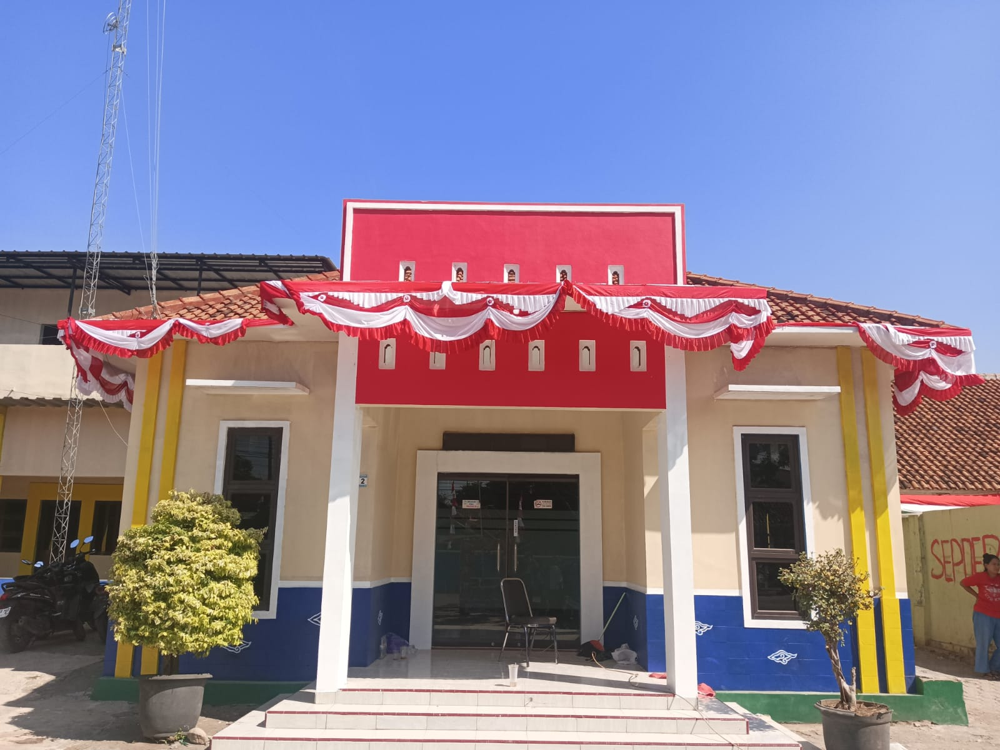

Lokasi Desa Leuwidingding
Berikut peta dan lokasi Desa Leuwidingding di Kecamatan Lemahabang, Kabupaten Cirebon
Kecamatan Lemahabang, Kabupaten Cirebon, Jawa Barat
Desa Leuwidingding adalah sebuah desa yang terletak disebelah timur wilayah kabupaten Cirebon, dari ibukota kabupaten berjarak sekitar 30 km. dengan ketinggian 8 meter diatas permukaan laut, dengan luas wilayah 1117,100ha desa Leuwidingding salah satu desa yang berada di kecamatan Lemahabang, kabupaten Cirebon, provinsi Jawa Barat, Indonesia.
mayoritas penduduk desa Leuwidingding bermata pencaharian sebagai buruh tani, pedagang, buruh bangunan , dan pegawai negri atau swasta, dan memiliki sejarah terwujudnya desa Leuwidingding.
Pusat pemerintahan dan pelayanan masyarakat Desa Leuwidingding.
Jiwa Penduduk
RW
RT
-
Berikut peta dan lokasi Desa Leuwidingding di Kecamatan Lemahabang, Kabupaten Cirebon
Sekitar pada abad ke XIV disebuah pedukuhan Panongan terdapat sebuah kali yang bernama kali Singaraja yang panjangnya kira kira 12 km. Kali tersebut berawal dari air pegunungan yang mengalir dari desa Panongan sampai ke desa Leuwidingding dan desa Lemahabang. Di Kali Singaraja dihuni dan dikuasai oleh seekor Singa yang sakti mandraguna, ia mempunyai kaki tiga, pada bagian belakang berkaki dua dan bagian depan hanya satu kaki, bertugas ditapal batas hutan sedong dan hutan sampih sebagai utusan dari kerajaan Galuh Pakuan, dengan secara tiba-tiba kedatangan tamu yang mengaku utusan dari kerajaan Galuh Pakuan yakni seorang ponggawa yang berpakaiaan baju macan dengan kancing sebanyak 21, beliau sudah merupakan ujud seperti macan datang ke Gunung Merapi, akan tetapi pertemuan kedua mahluk tersebut masing masing mempunyai praduga yang berlainan, sehingga timbul suatu anggapan yang berbeda, disangka kedatangan sang macan itu ingin merebut kekuasaan singa di Kali Singaraja, maka timbullah perselihan paham, bahkan sampai terjadi perang tanding adu kesaktian diantara kedua belah pihak yang memakan waktu cukup lama karena sama-sama memiliki ilmu kanuragan yang sangat sakti. Hingga pada saat yang tepat sang macan mengeluarkan pusaka andalannya yang berupa gobang (golok panjang yang berbentuk seperti pedang), maka sang singa merasa kasoran (kalah dalam adu kesaktian), entah karena apa tiba-tiba kedua mahluk tersebut dengan secara tiba-tiba menghentikan pertarungan, sehingga kesadaran mereka timbul bahkan keduanya saling menyadari atas kejadian tersebut karena kedua belah pihak masing-masing mempunyai tujuan yang sama, dan satu perintah dari kerajaan Galuh Pakuan, kedua mahluk tersebut saling memaafkan dan ia beristirahat, pada bekas pertarungan tadi disebuah pedukuhan asem. Besok ning akhire zaman (Nanti diakhir zaman) kali tersebut kuberi nama Kali Cigobang" kata Singa. Ditempat peristirahatan tadi secara tiba-tiba keluar air tuk, persis diatasnya terdapat pohon Loa, maka kali itu kuberi nama "Ciloa yang sangat bermanpaat bagi umat manusia.
Temukan produk-produk unggulan dari pelaku UMKM Desa Leuwidingding.
Lihat Produk LainnyaRp10.000 / Bungkus
Tape Ketan Daun Jambu adalah camilan tradisional yang dibuat dengan fermentasi ketan pilihan dan dibungkus daun jambu segar. Aroma khas daun jambu membuat rasanya semakin unik, segar, dan nikmat. Dengan rasa manis legit alami, tape ini cocok untuk dinikmati bersama keluarga, dijadikan suguhan tamu, maupun oleh-oleh khas desa yang selalu berkesan
Rp12.000 / Bungkus
Nikmati kriuk gurih Rengginang yang selalu jadi favorit semua kalangan. Dibuat dengan bahan berkualitas dan resep tradisional, setiap gigitannya menghadirkan rasa otentik yang khas. Rengginang cocok dinikmati kapan saja, baik saat kumpul keluarga, acara spesial, atau dijadikan oleh-oleh khas desa.
 Pesan Sekarang
Pesan Sekarang